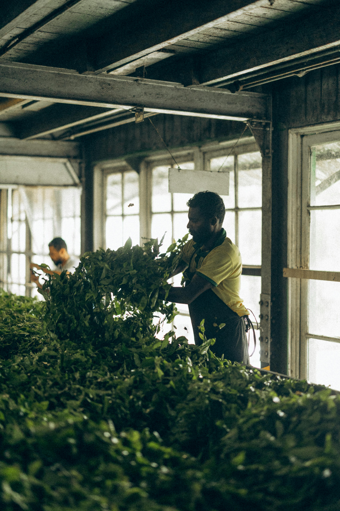

Your CV is your first opportunity to make an impression. It should be clear, accurate, and tailored to each job
you apply for. Include only relevant details like your education, job experience, certifications, languages, and
skills. Always proofread to avoid grammar errors. If possible, include a short summary at the top that
highlights your strengths.
Interview Tips for First-Time Applicants
A person facing Interview
Interviews can be intimidating, but preparation builds confidence. Always research the company beforehand.
Practice answering common questions like "Tell me about yourself" or "Why should we hire you?" Dress
appropriately for the industry and arrive at least 10 minutes early. Maintain good posture and eye contact.
After the interview, sending a thank-you message can leave a strong impression.
Top In-Demand Job Sectors and Roles in Sri Lanka (2025 and Beyond)
Sri Lanka’s employment landscape is transforming rapidly. Understanding which industries are thriving and what
skills employers seek is essential for building a future-proof career. Below are some of the most promising
sectors in 2025 and how you can tap into them.
1. Information Technology (IT): The tech sector continues to boom, especially in software
development, mobile app creation, data science, and cybersecurity. Job roles include Software Engineer, Frontend
Developer, System Analyst, and Network Administrator. To prepare, consider certifications in Java, Python, AWS,
or cybersecurity (e.g., CompTIA Security+).
A job with Technology(IT)
2. Healthcare: Driven by population growth and aging, there is a critical need for healthcare
professionals. Key roles include General Nurses, Lab Technicians, Physiotherapists, and Mental Health
Counselors. With international demand also growing, getting qualified in Sri Lanka opens global opportunities.
Soft skills like empathy, patience, and communication are essential in this field.
Caring health of other persons
3. Construction and Engineering: Urban development, highway projects, and real estate
expansion are generating high demand for Civil Engineers, Site Supervisors, Quantity Surveyors, and CAD
Technicians. Learning project management and gaining site experience is essential. Consider studying structural
designor sustainable architecture to stay competitive.
Build the world with architecture
4. Education and Online Tutoring: Digital education has created new careers in online
teaching, content development, and virtual classroom management. Teachers with expertise in English, ICT,
Science, and Mathematics are especially needed. Platforms like Zoom and Google Classroom have made remote
teaching mainstream. TESOL and online teaching certifications can increase job opportunities.
The online teacher
5. E-commerce and Digital Marketing: Businesses are shifting online, creating demand for roles
like SEO Specialist, Content Writer, Social Media Manager, and Digital Campaign Analyst. Knowledge in platforms
such as Google Ads, Meta Business Suite, and Shopify are valuable. Creativity combined with basic graphic design
and analytics skills gives job seekers a major advantage.
A new marketing world
6. Tourism and Hospitality: As global travel rebounds, Sri Lanka’s tourism sector is
recovering. Positions such as Hotel Manager, Tour Guide, Receptionist, and Culinary Expert are opening up again.
Language proficiency (especially in English, Chinese, or German) is a major plus in this field.
Global traveling
7. Agriculture and Agritech: Modernizing agriculture is becoming vital to food security. Roles
like Agritech Developer, Agricultural Engineer, and Sustainable Farming Consultant are emerging. Combining
traditional farming knowledge with technology like drones, IoT sensors, and hydroponics can create new career
paths.

Farming
Tip for Job Seekers: Constantly update your skills through online platforms like Coursera,
LinkedIn Learning, or local NVQ programs. Volunteering or internships also provide real-world experience that
can set you apart.
Potential Article Titles Based on This Information
General Job Market & Career Guidance:
Navigating Sri Lanka's Evolving Job Market: Opportunities and Trends for 2025
Your Guide to Career Success in Sri Lanka: In-Demand Jobs and Essential Skills
Beyond the CV: A Comprehensive Guide to Job Hunting in Sri Lanka
Future-Proofing Your Career: Key Industries and Skills to Master
Unlocking Your Potential: A Job Seeker's Handbook for the Modern Sri Lankan Market
Specific Topics:
The IT Boom in Sri Lanka: High-Demand Roles and What You Need to Know
Digital Marketing and E-commerce: How Online Skills Can Get You Hired Fast
Healthcare Careers in Sri Lanka: A Lifeline of Employment Opportunities
Construction and Engineering Jobs: Building Sri Lanka’s Future
Mastering the Sri Lankan CV: Structure, Style, and Common Mistakes
Ace Your Interview: Strategies, Questions, and What Employers Expect
The Power of English: Why Strong Communication Opens Doors in Every Industry
Combined Titles:
Sri Lanka's Top Jobs (2025): Essential Skills, CV Tips, and Interview Strategies
From CV to Career: Your Complete Guide to Sri Lanka's Job Market in 2025
In-Demand Jobs in Sri Lanka: Skills to Acquire, CVs to Polish, and Interviews to Conquer
Learn English for Career Success
Proficiency in English is a critical skill across nearly every field in Sri Lanka. It enhances your chances of
being hired, allows you to access more educational material, and makes you eligible for international
opportunities. Start by improving basic grammar and vocabulary. Use YouTube lessons, read English newspapers,
and speak with others daily. Even 30 minutes a day can improve fluency over time.